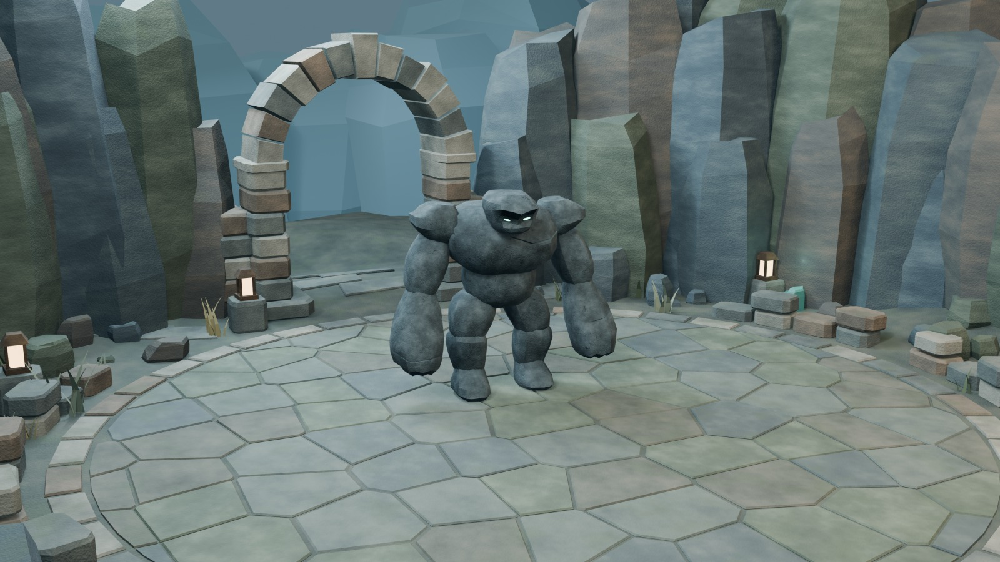
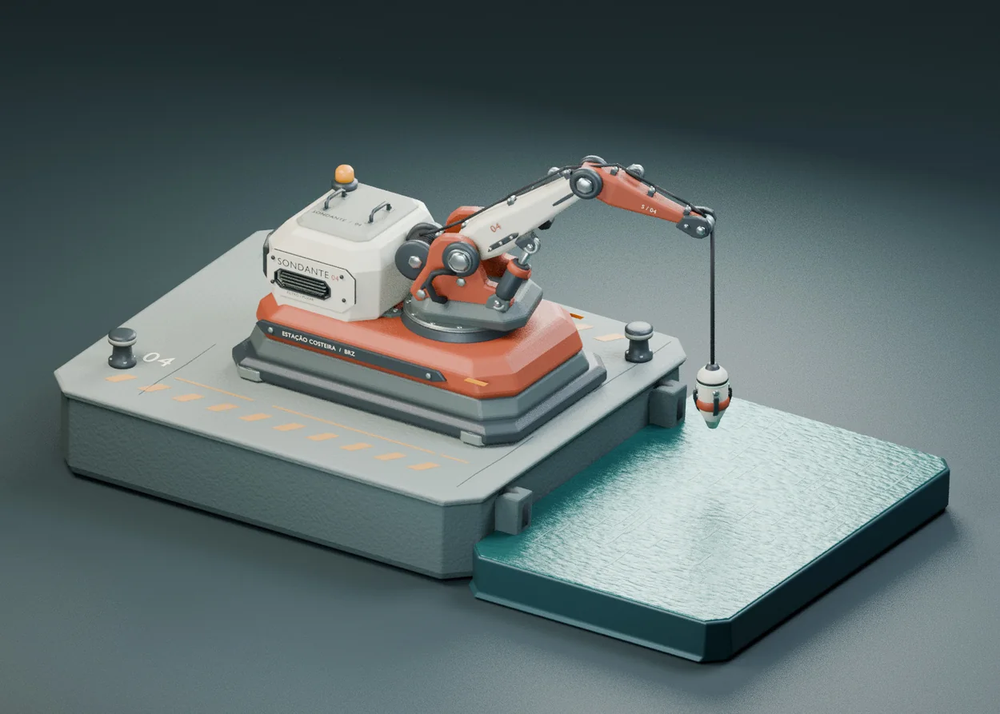

Character / Roblox
View in 3DRIFTWARD
An articulated stone guardian, combat animations and impact effects.
View projectPietro Braz / 3D & game development
I create stylized 3D worlds, characters and interactive experiences.
Explore the work
RIFTWARD / The Stone SentinelAn articulated stone guardian, combat animations and impact effects.
View project
A dockside sampling station with an articulated arm and suspended probe.
View project
A cottage, watchtower and footbridge connected by a winding creek.
View project
A fishing hut, timber pier and rowboat along a quiet shoreline.
View project
A rural station and freight wagon set among low-poly woodland.
View project
Winding roads and procedural landscapes built for exploration.
View project
A dungeon crawler exploring character classes, combat and progression.
View projectI'm Pietro Braz. I work across 3D modeling, animation and game development, bringing environments, characters and mechanisms to life.
Find me on GitHub